Setup Menu - Preferences
{kind=link}
Color
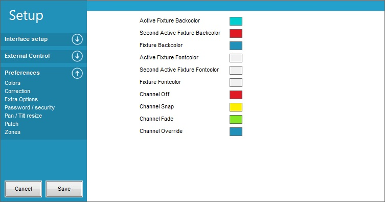
The color panel is almost self explaining of what color can be set to which function.
{kind=link}
Correction
The Correction panel are used to offset the value of a channel.
In this figure channel 11 has an offset of 20 which are added to the value from the control.
If for example the control is set to 127 then the value on channel 11 will be 147.
The range of the correction is -99 to 255.
The correction is not active before it is saved.
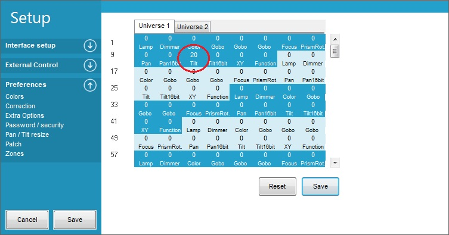
In the “Output” → “Show Output” the channel that are corrected will be red marked
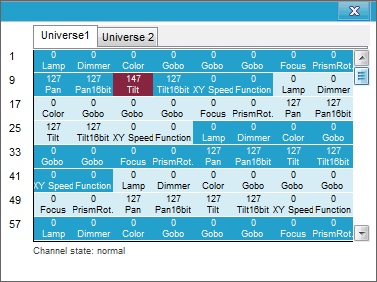
{kind=link}
{kind=link}
Extra Options
{kind=link}
Open cue and overridebuttons on Startup
When enabled the Cue window and the overridebuttons panel will automatically be opened when Freestyler is started.
Open cue and submasters on Startup
As the title says the two panels will open on startup and be ready to operate.
Open sound2Light on Stratup
This opens the sound2Light add-on in FreeStyler direct when the program is started.
Automatically expand faders when fixture selected.
When enabled the fader panel located to the right in Freestyler window will automatically expand when a fixture is selected.
Normally it is hidden and are to be touched before it expands.
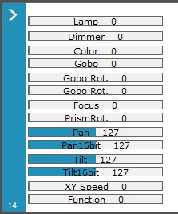
{kind=link}
Cue Multiselect always enabled
When more cues are to run in parallel this multiselect are to be enabled.
This is the case when sub masters are to be used.
Cue “Go to previous value” always enabled.
When enabled the vales for the channels that has been changed by the cue will have there values prior to the cue start.
With this enabled it is for all cues.
A similar function is available in the cue panel but there it has to be set for each single item in the cue.
Send DMX data to Martin LightJockey
Please enter info
Use transparency on window with no focus
Highlight the window in focus and gray out the others.
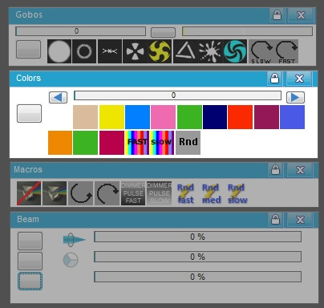
{kind=link}
Reset Freestyler to factory defaults
Will bring Freestyler back to original settings. The reset will first take place after Freestyler has been restarted.
Reset windows position
This will bring windows back if they are lost. This can happen if monitors are shifted to other sizes and so on.
It is also possible to reset windows position in the “Window” menu.
Increase process priority.
On some systems FS didn't start the first time. To overcome this problem the priority can be increased.
This don’t speed up processes or anything else.
Password.
The Password protection is used to protect the access to the Freestyler Setup.
This will remove “Setup” from the menu bar.
All other function can additionally be blocked so only a limited functions / panels are accessable.
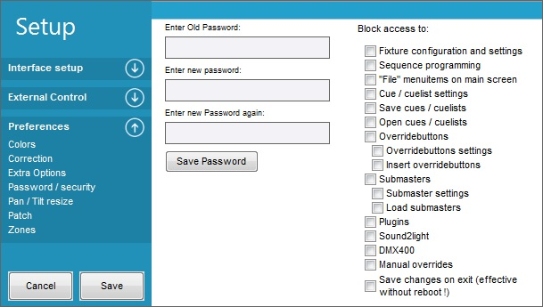
The setting of the password is straight forward.
If it is the first time then the wanted password just have to be entered in the two Enter new password boxes.
The Password window has check boxes in the right side where it is possible select which areas to protect with the Password.
If it is a password change then the old password are to be entered additionally.
To delete the password leave the new password box empty.
It can be necessary to close the program to deactivate the password protection.
And the “Setup” menu's are gone.
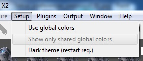
To unlock the ”Setup” goto the file menu and select “Enter password and disable security”.
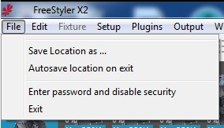
The ”Enter Password” popup will appear.
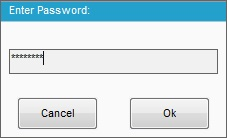
If the Password protection are to be enabled again then it is done by setting up the password again.
{kind=link}
{kind=link}
{kind=link}
{kind=link}
Pan / Tilt resize.
Sometimes when you preprogrammed sequences for a special location and you might want to use the same sequences on another location then you are able to resize the pan & tilt movements (going from 1 to 120%).
The resizing only works in the cue window (no shapes yet)!
Note: Direct copy from help file.
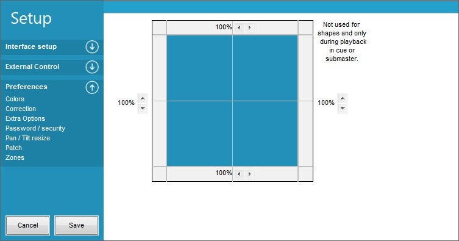
This is a general resizing that will affect all cues with movement control.
It is not possible to just resize the movement for a group of fixture with this setting.
{kind=link}
Patch
Patch is a simple but effective way to place the same control on more channels.
Her the Amber channel 4 is patched to Amber channel 20, 36 and 52.
This means that the vale from channel 4 also is send on the 3 patched channels and the original control to this channels is omitted.
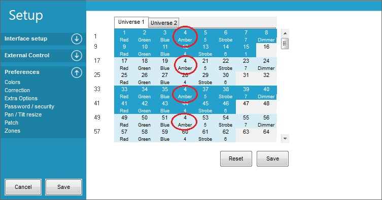
The patching is not active before it has been saved.
The patched channel are marked with red in the “Output”→”Show Output” window.
Her channel 4's value 98 is also send on channel 20, 36 and 52
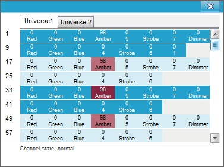
So here the amber control for fixture 1 also controlles amber for the 3 other fixtures.
An other example could be patching all channels for one fixture, one by one, to all fixtures of then same type.
This gives that the fixture 1 will control all the fixtures.
It will be the same as giving all the fixtures, the same DMX address to listen at in parallel.
You gain that only one fixture control all fixtures, the lose is that you don't have individual control on the fixtures.
{kind=link}
{kind=link}
Zone.
Zone can be used to group fixtures into tabs.
This can be useful when there are some secondary lights to control.
It will be possible to have a clean workspace where only fixtures that are related are placed.
Note. Zones are not DMX universes. FreeStyler is 2x 512 channel (2 universes) and the fixtures can be organized on 4 tab's / zones.
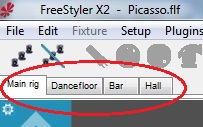
The setup of each zone / tab are simply a name with max 10 char.
It is possible to insert a background on each tab.
Freestyler may need to be restarted before the background are correct.
A small trick.
To add a background on freestyler without enabling zone just add the image name in the main zone background.
The tabs will not be shown but the image will.
The background images has to fit the monitor in advance because it is not possible to size or center it in this setup.
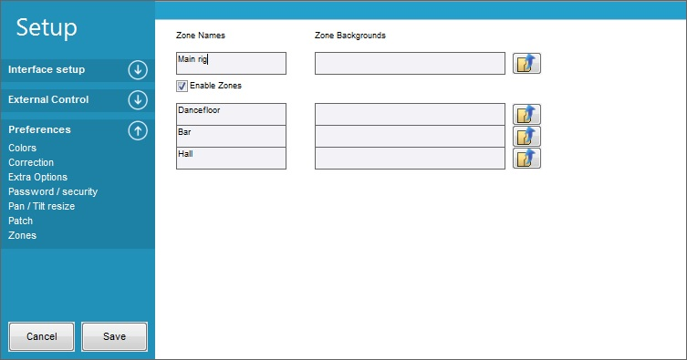
Here 4 Zones are defined Main rig, Dancefloor, Bar and hall.
But it could also have been a LED matrix that has been placed in a zone.
A matrix normally have many fixtures and if they only are running in predefined cues or LedTrix then they don’t need to be in the main window.
So a nice way to have a clean work space.
When zone is enabled the Add fixture gets an extra field to select which zone the fixtuer are to be placed in.
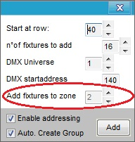
And the same for the right click on the fixture. It also gets a “move to zone” control.
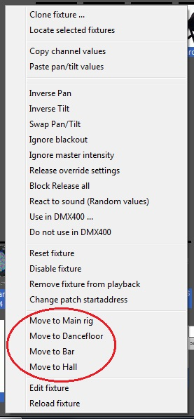
An example on Zones can be like the images bellow.
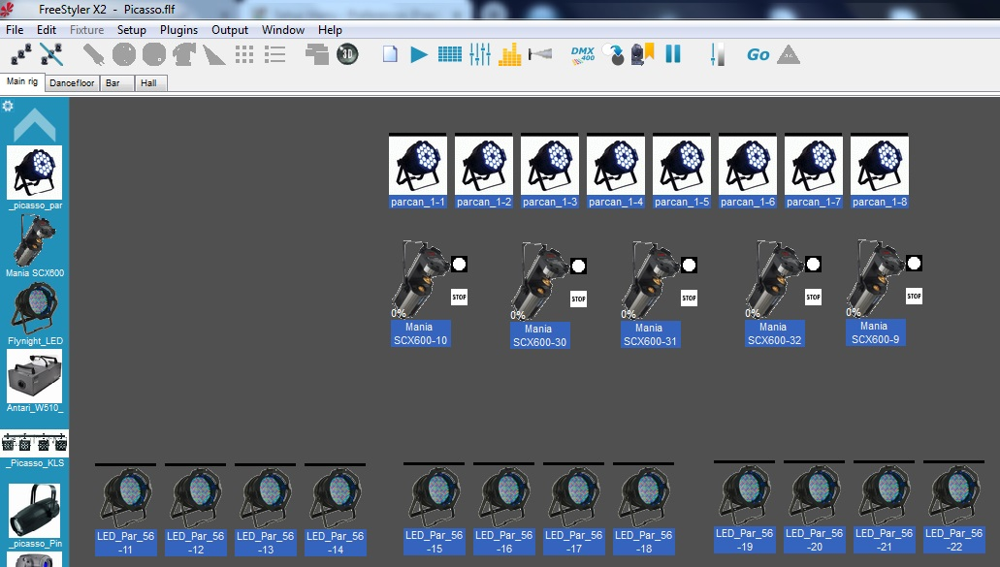
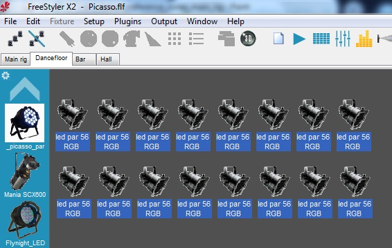
{kind=link}
{kind=link}
{kind=link}
{kind=link}
{kind=link}
{kind=link}